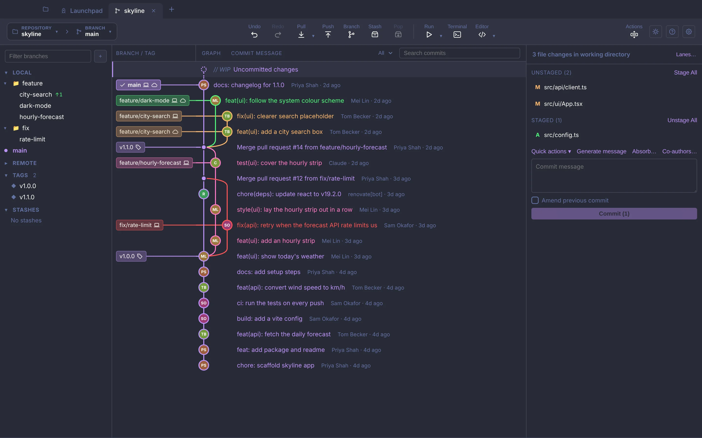
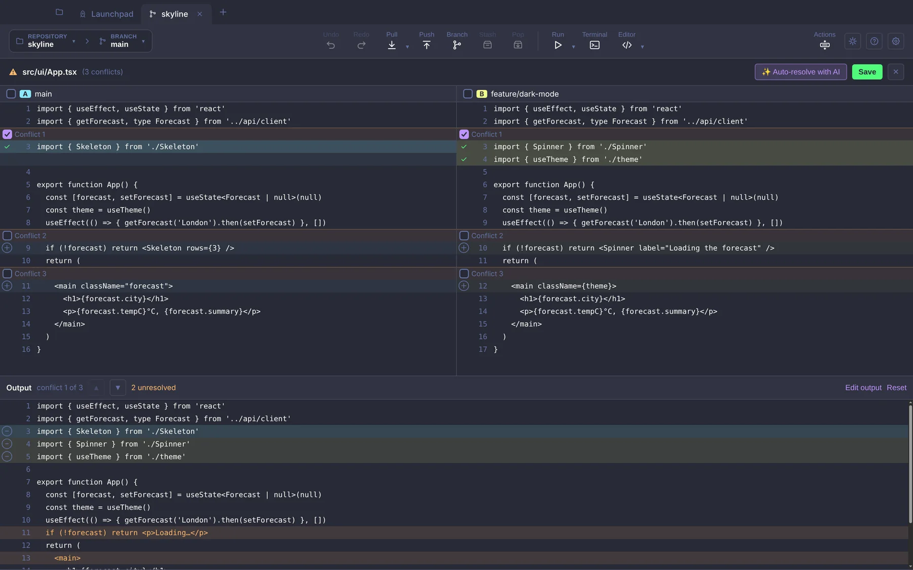
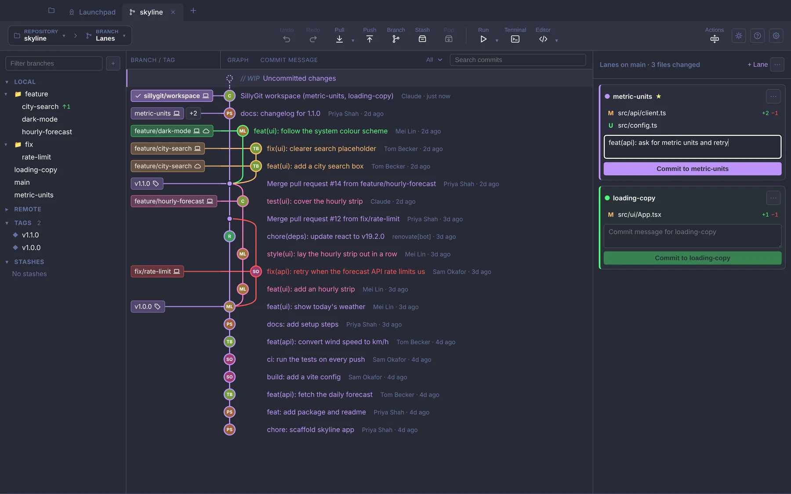
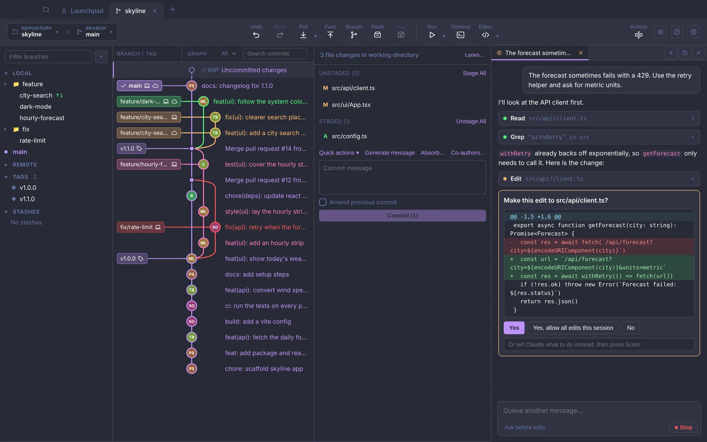
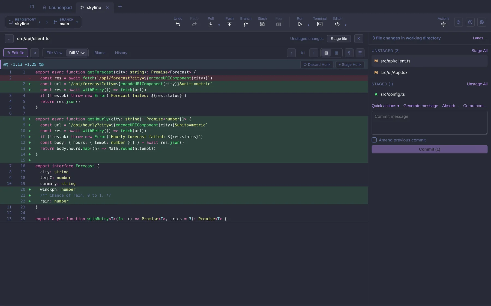
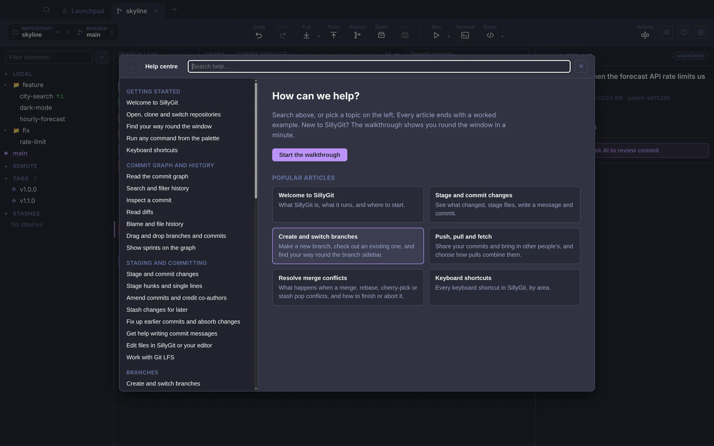

macOS
A .dmg for Apple silicon or Intel.
The first time, right-click the app and choose Open.
DownloadA desktop Git client. It draws your history as a graph, lets you stage a single line, gives you a three-way editor for merge conflicts, and can run Claude Code in the repository you have open.
Free and MIT licensed. Builds for macOS and Windows; Linux from source.

Every button runs the git already on your machine, with your config, hooks, credentials and signing keys. SillyGit doesn't ship its own copy. Actions → Activity log lists the exact commands it ran.
You can switch to a terminal at any point. The graph and file list update when the repository changes on disk, and Undo works from Git's reflog, which means it can take back a commit, checkout, merge, rebase or reset even if you ran it in the terminal.
Select any commit in the graph, such as the newest commit on a pull request you're reviewing, and choose Run in isolation. SillyGit checks that commit out into a private copy of the repository, installs dependencies when they've changed, and runs your project's command there: npm run dev, ./gradlew bootRun, dotnet run or whatever you've set.
Your branch and your uncommitted changes stay exactly as they were. You don't stash anything or check anything out, and you can keep your own working copy running alongside to compare the two. Files a project needs but never commits, like .env and local.properties, are copied into the private copy for you.
Click a conflicted file and you get your side and their side next to each other, with the result underneath. Tick the lines or chunks you want from each side, in either order, and type into the result for anything neither side has.
If a merge leaves a dozen files in conflict, select several and take one side for all of them. There's an undo for that. The same editor handles conflicts from rebases, cherry-picks and stash pops.

Git checks out one branch per folder; with lanes you can have several. Each lane is a real branch, and each change in your working copy belongs to one lane.
Say you're halfway through a feature and spot an unrelated bug. Fix it, drag the file into a second lane, and commit each lane to its own branch. Both sets of changes stay in your working copy the whole time, so you can still build and test them together.

The Claude panel runs Claude Code in the repository you have open. By default it asks before it edits a file or runs a command, and shows you the diff or the command first.
Whatever it changes ends up in your working copy like any other edit, so you review and commit it the usual way. It needs Claude Code signed in or an Anthropic API key. Everything else in SillyGit works without one.

Stage or discard a single line straight from the diff. To fix an older commit, stage the fix, right-click the commit and choose Fix up this commit with staged changes.
If you have fixes for several commits, Absorb works out which unpushed commit last touched each hunk, shows you where each one will go, and folds them in. Both rewrite history, so they're meant for commits you haven't pushed.

Press F1 or ? for the help centre: 53 short articles, each ending with a worked example. The first time you open a repository there's a quick walkthrough of the window, which you can skip.

This is an early release. The builds aren't signed yet, so your system will warn you the first time you open SillyGit.
A .dmg for Apple silicon or Intel.
The first time, right-click the app and choose Open.
DownloadA .zip for 64-bit Windows 10 and 11. Unzip it and run SillyGit.exe.
If SmartScreen stops it, click More info, then Run anyway.
DownloadNo prebuilt download yet. Run it from a clone, or make an AppImage with npm run dist.
Needs Git and Node.js 22.
Build from source